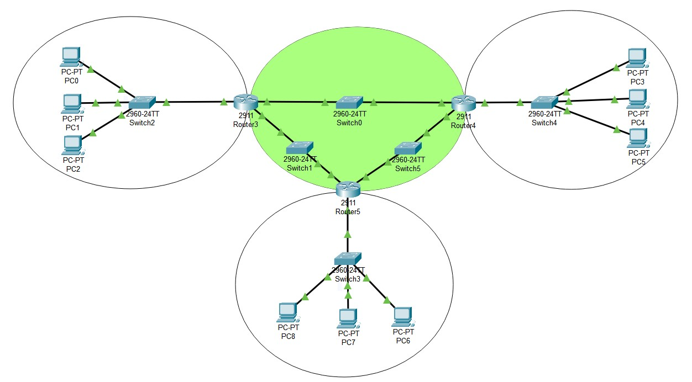

Лабораторные работы
по дисциплине
"Интернет-технологии"
Для выполнения лабораторной работы 3 потребовалось построить виртуальную локальную сеть в Cisco Packet Tracer. По итогу получилось создать сеть, состоящую из 4-х отделов, в которых вручную были прописаны IP адреса, а также была реализована динамическая маршрутизация по протоколу RIP.
Визуализация полученной сети.
| Название устройства | Интерфейс | IP адрес | Маска подсети | Шлюз по умолчанию |
|---|---|---|---|---|
| PC-PT PC0 | Fa0 | 192.168.32.1 | 255.255.255.0 | 192.168.32.254 |
| PC-PT PC1 | Fa0 | 192.168.32.2 | 255.255.255.0 | 192.168.32.254 |
| PC-PT PC2 | Fa0 | 192.168.32.3 | 255.255.255.0 | 192.168.32.254 |
| 2960-24TT Switch2 | Fa0/4 | vlan 1 | 255.255.255.0 | 192.168.32.254 |
| 2911 Router3 | Gig0/0 | 192.168.32.254 | 255.255.255.0 | RIP |
| - | - | - | - | - |